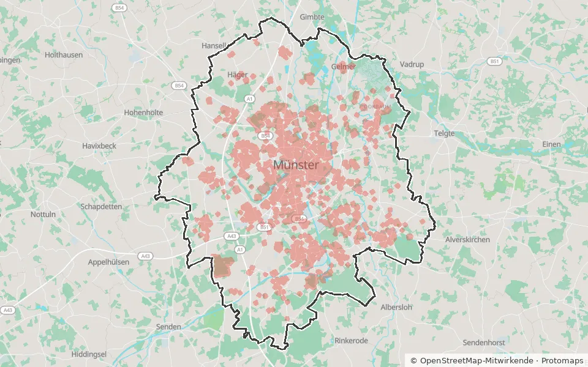
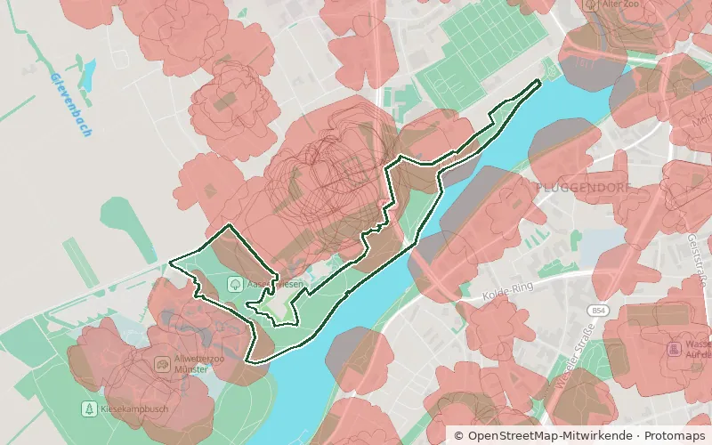
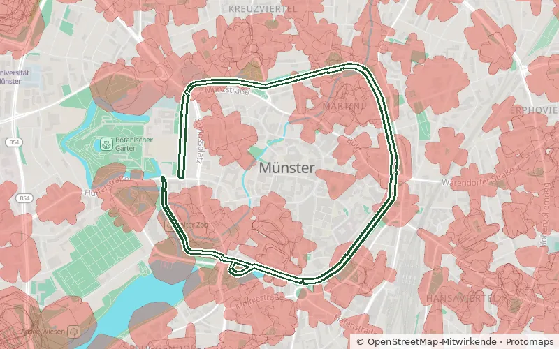
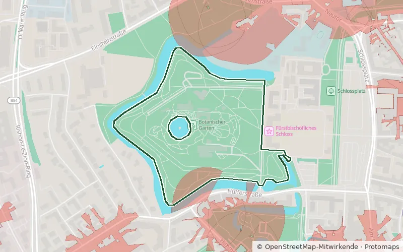
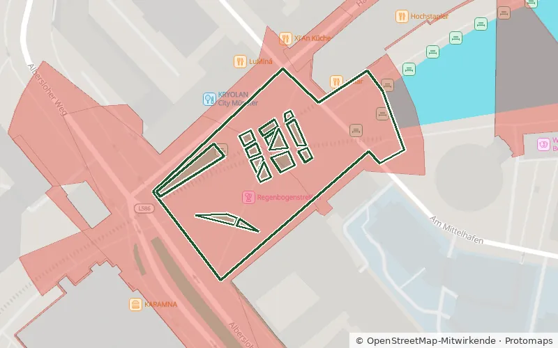
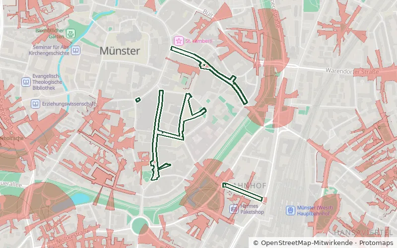
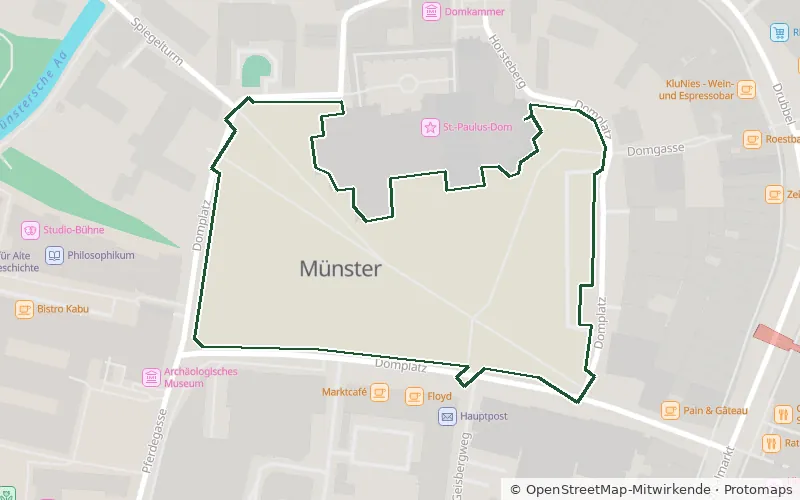

In Münster ist öffentliches Kiffen auf 36 km² verboten, das sind 11,8 % der Stadtfläche von 303 km². Grund sind 1 914 Einrichtungen wie Schulen und Spielplätze: In ihrer Sichtweite, bis 100 Meter vom Eingang und ohne Gebäude dazwischen, verbietet § 5 KCanG den Konsum. Dazu kommen die Fußgängerzonen von 7 bis 20 Uhr und überall die Gegenwart von Minderjährigen.
Das ist wenig für eine Großstadt: Münster hat viel Fläche mit Feldern, Höfen und Wald zwischen den Stadtteilen. Ohne den Wald gerechnet liegen 12,8 % der Stadt in einer Zone.

Woher die Zonen in Münster kommen
| Einrichtung | Anzahl | Zonenfläche |
|---|---|---|
| Schulen | 124 | 5,7 km² |
| Kitas und Kindergärten | 207 | 5,3 km² |
| Kindertagespflege | 9 | 0,2 km² |
| Spielplätze | 523 | 10,5 km² |
| Kinder- und Jugendeinrichtungen | 35 | 0,8 km² |
| Sportstätten | 1 016 | 21,9 km² |
Jede Art für sich gezählt, Überlappungen also mehrfach. Anbauvereinigungen nur, soweit in OpenStreetMap eingetragen.
Die meisten Zonen gehen auf die 1 016 Sportstätten zurück, danach auf die 523 Spielplätze.
Die Straßen-, Anlagen- und Aaseeordnung der Stadt verbietet auf Spielplätzen Alkohol und den Aufenthalt nach Einbruch der Dunkelheit; zu Cannabis und Rauchen sagt sie nichts (Ordnung). Seit Mai 2025 kontrollieren Ordnungsamt und Polizei gemeinsam an Spiel- und Sportplätzen, Kitas und Schulen, ob dort gekifft wird (Stadt Münster).
Aasee und Promenade
Auf den Aaseewiesen liegen 36 % der Fläche in einer Zone, um einen Spielplatz an der Torminbrücke und die Sportanlagen am Rand; der Aasee selbst liegt zu 21 % der Wasserfläche in einer Zone. Am 1. Mai verbietet die Stadt an Teilen des Ufers Glas; eine Regel zu Cannabis gibt es am Aasee nicht.

Von der Promenade, dem Grünring um die Altstadt, liegen 52 % in einer Zone, gerechnet auf einem 15 Meter breiten Streifen; an ihr liegen Schulen, Spielplätze und Sportanlagen.

Im Schlossgarten sind es nur 6 %. Im Botanischen Garten der Universität daneben verbietet die Hausordnung Cannabis ausdrücklich (Botanischer Garten). Der Wienburgpark kommt auf 28 %; der Hafenplatz am Kreativkai liegt ganz in einer Zone (100 %), wegen des Skateplatzes darauf.


Altstadt
Eine amtliche Liste der Münsteraner Fußgängerzonen haben wir nicht gefunden. Die Ludgeristraße ist seit 1969 Fußgängerzone (Stadt Münster), die Sondernutzungssatzung nennt außerdem die Fußgängerzone zwischen Salzstraße und Altem Steinweg. In den Fußgängerzonen gilt von 7 bis 20 Uhr Konsumverbot; blau sind die Fußgängerbereiche aus OpenStreetMap. Den Prinzipalmarkt nennt keine Quelle der Stadt eine Fußgängerzone, und in OpenStreetMap ist er keine.
Von Ludgeristraße, Salzstraße, Stubengasse, Windthorststraße und Rothenburg liegen außerdem 13 % in einer Sichtweiten-Zone. Der Domplatz liegt außerhalb der Zonen (0 %), ebenso der Prinzipalmarkt fast ganz (2 %).


Send und Stadion
Für den Send auf dem Schlossplatz hat die Stadt keine eigene Verfügung zu Cannabis erlassen; es gilt der Erlass des Landes für Volksfeste (siehe Volksfest-Erlass des Landes), und Kinder sind auf dem Send überall. Im Preußenstadion verbietet die Stadionordnung, Drogen mitzubringen; das Stadion ist als Sportstätte ohnehin eine Verbotszone.
Was sonst noch in Münster gilt
In Nordrhein-Westfalen kostet ein Verstoß 50 bis 500 Euro, vor Minderjährigen 300 bis 1.000 Euro (Land NRW). Auf Volksfesten müssen die Veranstalter Verstöße verhindern, notfalls mit einem Verbot (Erlass, Mai 2024). Eigene Verbotszonen für Cannabis hat Münster nicht (Stand 27. November 2026).
Häufige Fragen zu Münster
Wo darf man in Münster kiffen?
Nach § 5 KCanG außerhalb der roten Flächen, etwa im Schlossgarten (6 % in einer Zone), aber nicht im Botanischen Garten daneben, dessen Hausordnung Cannabis verbietet. Tagsüber nicht in den Fußgängerzonen der Altstadt und nie in Gegenwart von Minderjährigen. Weiß heißt nicht sicher erlaubt: Hecken, Bäume und fehlende Einrichtungen kennt die Karte nicht.
Darf man am Aasee kiffen?
Auf großen Teilen der Wiesen verbietet es § 5 KCanG nicht; rot sind die Bereiche um Spielplätze und Sportanlagen. In Gegenwart von Kindern und Jugendlichen gilt das Verbot überall.
Wie genau ist das?
Täglich aus OpenStreetMap gerechnet, mit Gebäuden als Sichthindernis; die Zahlen hier sind vom 27. November 2026. Eine Orientierungshilfe, keine Rechtsauskunft (wie gerechnet wird).
Fehlt eine Einrichtung? Korrekturen in OpenStreetMap stehen am Tag darauf auf der Karte; bitte nur eintragen, was es vor Ort gibt.